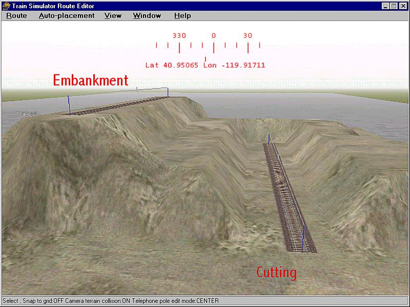
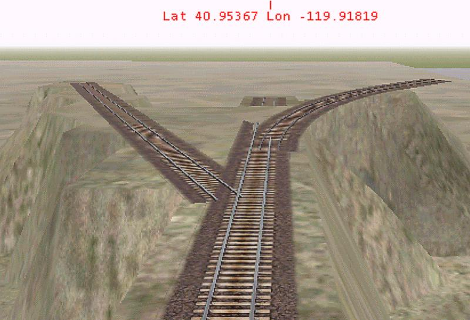
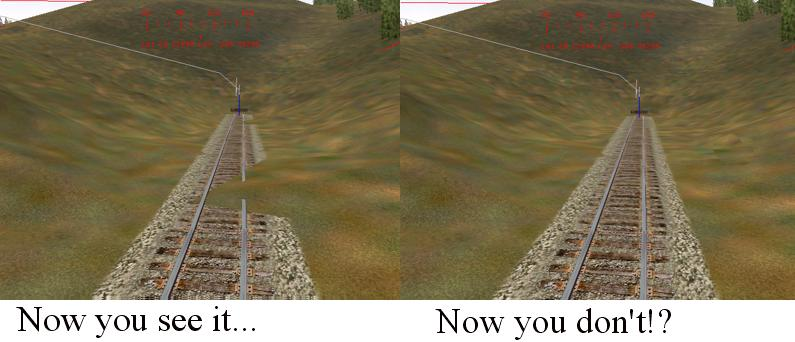
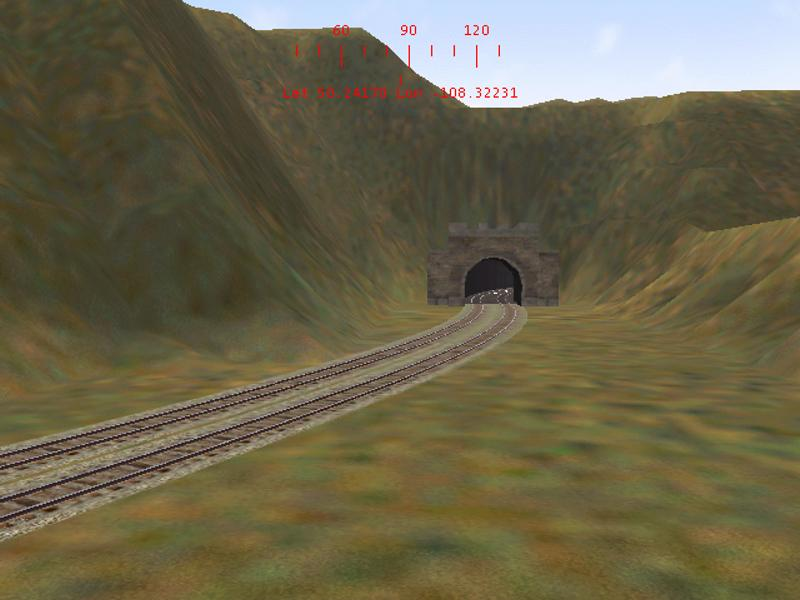

Embankments and Cuttings
by Jim "Sniper297" Ward
(with contributions by Lawrence Kellie, Rob Murphy and David Klemm)
The Terrain window has 3 settings, embankment, width, and cutting. Embankment and Cutting are the angle of the slope in degrees, embankment above ground and cutting below.

Width might seem obvious, but since the terrain polygons are rather coarse and rectangular, wide enough for straight level track pointing due North/South is not going to be wide enough for a sharp curve, angled North East and inclined 3 degrees.
I have found that "width" covers a rectangular area, so "width" also means length. Even when going in one of the 4 cardinal compass directions if you are going up or down a steep grade, spillover or undercutting is going to occur on the connected track pieces, and the only way to fix it is to steepen cutting and embankment, experiment with width (and length, remember) to see how little you can get away with, and go back over the whole grade clicking on each section and hitting "Y".

In the above shot the embankment is set at 75 degrees, the width at 10(meters, I assume, KUJU didn't say). The center track is pointing due North, the width looks good, the embankment is clean and sharp. The left track is rotated to azimuth 330 degrees, the width is too wide in some places, undercuts in others, and leaves a sawtooth edge. The right hand piece is a 45 degree yard curve angled to an elevation of 3 degrees up, and it's a complete mess. The fill underneath doesn't even go all the way to the end. So as you can see, your choices are too wide or not wide enough. This is further complicated by the "now you see it now you don't" problem with the editor, you have some terrain spilling over onto the track after hitting the "Y" key, select the terrain editing tool to adjust it, and it disappears. And sadistically reappears as soon as you deselect the terrain tool.

The only thing you can do is to increase the width in small increments, reselect the track piece, hit "Y" again, and see if that cleans it up. Then go around trying to fix nearby track at different elevations. In the second picture you'll see the 45 degree yard curve spilled over onto the center 100 meter straight, in spite of the fact that it didn't fill in completely. Given the already steep embankment, that track configuration is probably not going to work. Sometimes saving or hitting the J key (recalculate terrain buffers) works, sometimes it don't. So all too frequently the choice is unrealistcally wide cuts and valleys with flat floors, or accept some spillover.
